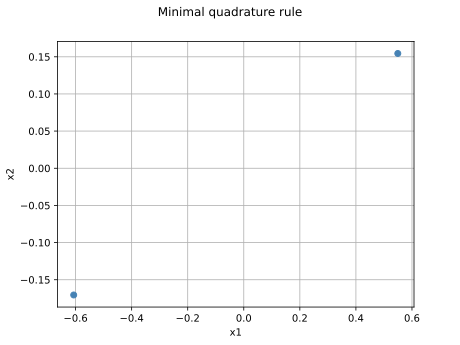
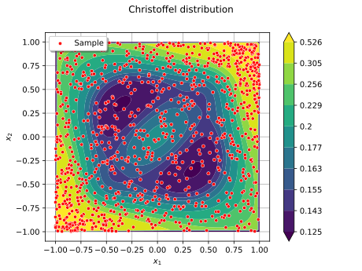

Note
Go to the end to download the full example code.
Orthonormalize a finite set of functions on a multivariate domain¶
Description¶
We consider a finite set of functions ![(g_1, \dots, g_n)]() defined on
the support of a probability distribution
defined on
the support of a probability distribution ![\mu]() on
on
![\Rset^\inputDim]() . These functions are usually not orthonormal with
respect to .
. These functions are usually not orthonormal with
respect to .
In this example, we build an orthonormal basis ![(\varphi_1, \dots, \varphi_n)]() of the vector space spanned by the functions
of the vector space spanned by the functions ![g_i]() , i.e. such that:
, i.e. such that:
![\langle \varphi_i, \varphi_j \rangle
= \int \varphi_i(\vect{x}) \varphi_j(\vect{x}) \, \mu(\mathrm{d}\vect{x})
= \delta_{ij}.]()
The initial functions are the first elements of the tensorized Legendre
basis, built with OrthogonalProductPolynomialFactory,
and the target measure defines the inner product against which they are
orthonormalized.
The BasisOrthonormalizationFactory class
performs the orthonormalization. Internally, it relies on the
BasisOrthonormalizationAlgorithm class for
the computation of the basis and on the
GaussLPQuadrature class for the construction
of quadrature rules.
We consider the joint distribution with uniform marginals on
![[-1, 1]^2]() and a Frank copula, which introduces dependence between
the two coordinates. As initial functions, we use the first six elements of
the tensorized Legendre basis. This basis is orthonormal with respect to the
product uniform distribution on , i.e. the distribution
with the same marginals but an independent copula. It is therefore not
orthonormal with respect to the target measure, whose copula is a Frank
copula. The factory computes a new orthonormal basis of the span of these
functions with respect to the target measure.
and a Frank copula, which introduces dependence between
the two coordinates. As initial functions, we use the first six elements of
the tensorized Legendre basis. This basis is orthonormal with respect to the
product uniform distribution on , i.e. the distribution
with the same marginals but an independent copula. It is therefore not
orthonormal with respect to the target measure, whose copula is a Frank
copula. The factory computes a new orthonormal basis of the span of these
functions with respect to the target measure.
import matplotlib.pyplot as plt
import openturns as ot
import openturns.experimental as otexp
import openturns.viewer as otv
# sphinx_gallery_thumbnail_number = 1
Define the target measure and the initial functions¶
dimension = 2
marginals = [ot.Uniform(-1.0, 1.0)] * dimension
measure = ot.JointDistribution(marginals, ot.FrankCopula(4.0))
print(f"Target measure: {measure}")
# The tensorized Legendre basis is orthonormal with respect to the product
# uniform measure on [-1, 1]^2, not with respect to the target measure.
initialBasis = ot.OrthogonalProductPolynomialFactory(
[ot.LegendreFactory()] * dimension
)
print(f"Instrumental measure of the initial basis: {initialBasis.getMeasure()}")
basisSize = 6
Target measure: JointDistribution(Uniform(a = -1, b = 1), Uniform(a = -1, b = 1), FrankCopula(theta = 4))
Instrumental measure of the initial basis: JointDistribution(Uniform(a = -1, b = 1), Uniform(a = -1, b = 1), IndependentCopula(dimension = 2))
Build the orthonormal basis¶
The factory is built from the initial basis, the target measure and the number of first elements of the initial basis to orthonormalize. Then each orthonormal function is built from its index.
factory = otexp.BasisOrthonormalizationFactory(initialBasis, measure, basisSize)
orthonormalFunctions = [factory.build(i) for i in range(basisSize)]
for i in range(3):
print(f"phi_{i} = {orthonormalFunctions[i]}")
phi_0 = 1 * (1)
phi_1 = 1 * (1.73205 * x0)
phi_2 = (-0.671049 * (1.73205 * x0) + 1.20429 * (1.73205 * x1))
Check orthonormality¶
We integrate products of functions against the target measure with a Gauss-Legendre rule. The initial Legendre functions are not orthonormal with respect to this measure: their Gram matrix is not the identity because the Frank copula introduces dependence.
def computeGramMatrix(functions):
"""Compute the Gram matrix of the functions against the target measure."""
degree = 20
integration = ot.GaussLegendre([degree] * dimension)
gram = ot.SymmetricMatrix(len(functions))
for i in range(len(functions)):
for j in range(i + 1):
def integrand(x, i=i, j=j):
return [
functions[i](x)[0]
* functions[j](x)[0]
* measure.computePDF(x)
]
function = ot.PythonFunction(dimension, 1, integrand)
gram[i, j] = integration.integrate(function, measure.getRange())[0]
# Clean the numerical noise at 1e-12 so that the printed matrix is
# readable; clean() returns a full matrix, so restore the symmetric view.
return ot.SymmetricMatrix(gram.clean(1.0e-12).getImplementation())
print("Gram matrix of the initial Legendre functions:")
print(computeGramMatrix([initialBasis.build(i) for i in range(basisSize)]))
Gram matrix of the initial Legendre functions:
6x6
[[ 1 0 0 0 0.557217 0 ]
[ 0 1 0.557217 0 0 0 ]
[ 0 0.557217 1 0 0 0 ]
[ 0 0 0 1 0.486629 0.205855 ]
[ 0.557217 0 0 0.486629 1.16468 0.486629 ]
[ 0 0 0 0.205855 0.486629 1 ]]
The non-zero off-diagonal entries confirm that the initial Legendre functions are not orthogonal with respect to the target measure. After orthonormalization, the Gram matrix is the identity matrix up to numerical precision.
print("Gram matrix of the orthonormal functions:")
print(computeGramMatrix(orthonormalFunctions))
Gram matrix of the orthonormal functions:
6x6
[[ 1 0 0 0 0 0 ]
[ 0 1 0 0 0 0 ]
[ 0 0 1 0 0 0 ]
[ 0 0 0 1 0 0 ]
[ 0 0 0 0 1 0 ]
[ 0 0 0 0 0 1 ]]
The six orthonormal functions are shown in the next figure. They span the same space as the initial Legendre functions, but their contours reflect the dependence structure of the target measure. Omit color bars and enlarge fonts to keep the gallery vignette readable.
oldLevelsNumber = ot.ResourceMap.GetAsUnsignedInteger("Contour-DefaultLevelsNumber")
oldColorBarPosition = ot.ResourceMap.GetAsString("Contour-DefaultColorBarPosition")
ot.ResourceMap.SetAsUnsignedInteger("Contour-DefaultLevelsNumber", 6)
ot.ResourceMap.SetAsString("Contour-DefaultColorBarPosition", "")
grid = ot.GridLayout(2, 3)
for i, function in enumerate(orthonormalFunctions):
graph = function.draw([-1.0] * dimension, [1.0] * dimension, [100] * dimension)
contour = graph.getDrawable(0).getImplementation()
contour.setIsFilled(True)
# Filled contours require at least two levels; the constant function has one.
if len(contour.getLevels()) < 2:
value = contour.getLevels()[0] if len(contour.getLevels()) else 0.0
contour.setLevels(ot.Point([value - 0.5, value + 0.5]))
graph.setDrawable(0, contour)
graph.setTitle(f"$\\varphi_{i}$")
graph.setXTitle("$x_1$")
graph.setYTitle("$x_2$")
grid.setGraph(i // 3, i % 3, graph)
ot.ResourceMap.SetAsUnsignedInteger("Contour-DefaultLevelsNumber", oldLevelsNumber)
ot.ResourceMap.SetAsString("Contour-DefaultColorBarPosition", oldColorBarPosition)
with plt.rc_context(
{
"font.size": 13,
"axes.titlesize": 14,
"axes.labelsize": 14,
"xtick.labelsize": 12,
"ytick.labelsize": 12,
}
):
view = otv.View(
grid, figure_kw={"figsize": (10.0, 7.0)}, axes_kw={"aspect": "equal"}
)
plt.subplots_adjust(wspace=0.35, hspace=0.6)

Build a quadrature rule¶
The buildQuadrature()
method builds a sparse quadrature rule which integrates exactly the first
functions of the basis. The number of nodes is an output of the algorithm:
it is at most n, and may be smaller when the linear program finds a
natural support of smaller size. The weights sum to one because the first
orthonormal function is the constant function equal to one.
The buildQuadratureRule()
method returns the same kind of rule as an immutable
GaussLPQuadratureRule, which can be passed
to any API expecting a WeightedExperiment.
The same rule can be built directly from the functions and the measure with
GaussLPQuadrature; the factory is only a
convenience for functions produced by the orthonormalization. The dedicated
example
Build a sparse quadrature rule with the Gauss-LP algorithm
shows this direct construction, its moment reproduction and its use on a
function outside the moments list.
Number of nodes: 2
Sum of weights: 1.000000
Integral of phi_0: 1.000e+00
Integral of phi_1: -5.119e-08
Integral of phi_2: -4.960e-08
Integral of phi_3: -1.600e-08
The quadrature nodes are represented in the next figure. The rule is sparse: it integrates the first four orthonormal functions with only two nodes.
graph = ot.Graph("Minimal quadrature rule", "x1", "x2", True)
cloud = ot.Cloud(nodes)
cloud.setPointStyle("fcircle")
cloud.setColor("steelblue")
graph.add(cloud)
graph.setAxes(True)
view = otv.View(graph)

The Christoffel distribution¶
The final orthonormal basis defines an approximation space of dimension
basisSize. The associated
ChristoffelDistribution is the probability
measure whose density is proportional to the sum of the squared basis
functions:
![\sigma_m(\mathrm{d}\vect{x})
= \frac{1}{m} \sum_{j=1}^m \varphi_j(\vect{x})^2 \, \mu(\mathrm{d}\vect{x}).]()
It concentrates where the orthonormal functions are large and provides an optimal sampling measure for least squares approximations in this space. We build it from the orthonormal functions and the target measure, then draw its PDF over a cloud of points sampled from it.
christoffelBasis = ot.OrthogonalBasis(
otexp.FiniteOrthogonalFunctionFactory(orthonormalFunctions, measure)
)
christoffel = otexp.ChristoffelDistribution(christoffelBasis, basisSize)
sample = christoffel.getSample(1000)
graph = christoffel.drawPDF(
[-1.0] * dimension, [1.0] * dimension, [101] * dimension
)
contour = graph.getDrawable(0).getImplementation()
contour.setIsFilled(True)
contour.setColorMapNorm("rank")
graph.setDrawable(0, contour)
graph.setTitle("Christoffel distribution")
graph.setXTitle("$x_1$")
graph.setYTitle("$x_2$")
cloud = ot.Cloud(sample)
cloud.setPointStyle("fcircle")
cloud.setColor("red")
cloud.setLegend("Sample")
graph.add(cloud)
# White edges keep the red circles readable on the filled contours.
view = otv.View(
graph, scatter_kw={"s": 18, "edgecolors": "white", "linewidths": 0.5}
)

view.ShowAll()